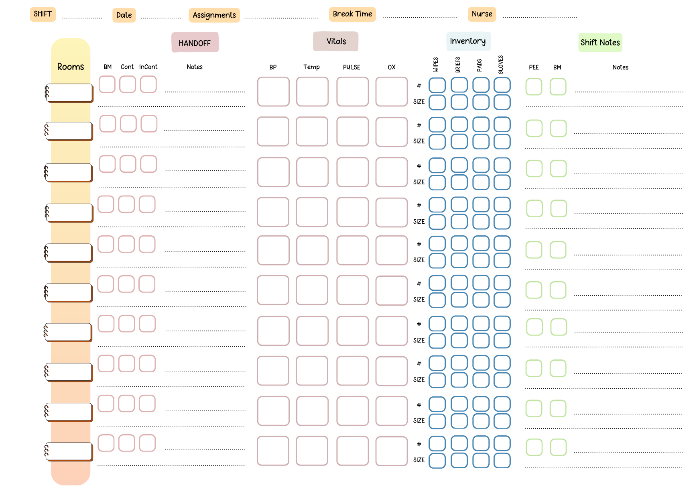

Keeping Everything HIPAA Compliant
Before describing what a normal night looks like, I want to make it clear that this article is written completely HIPAA compliant. No names, identifying information, medical record details, room numbers, or protected health information are being shared. Everything written here reflects generalized workflows and experiences common in long-term care and skilled nursing environments.
Protecting resident privacy is one of the most important responsibilities healthcare workers have.
Starting the Night
My shift officially starts at 11:00 p.m., but I usually arrive around 10:50 p.m. to prepare for the night ahead.
The first thing we do is review assignments and receive endorsements from the previous shift’s CNAs and nurses. This allows us to understand which residents may need closer monitoring, who may not be feeling well, or if there are important care updates to be aware of before the shift begins.
CNA Shift Workflow Organizer
To stay organized during the night, I use a workflow organizer system I created to help manage priorities and responsibilities throughout the shift.
Project Showcase Link:
View CNA Shift Workflow Organizer
Below is the project image for the workflow organizer. Update the image path if your asset lives in a different folder.

Healthcare becomes extremely fast-paced at night, especially when multiple residents need assistance at the same time. Having a structured workflow helps me stay organized while ensuring nothing important is missed.
Vitals and the Beginning of the Shift
From approximately 11:00 p.m. until midnight, one of our primary responsibilities is gathering vitals. This includes blood pressure, oxygen saturation, respirations, and temperature. Depending on the resident’s condition or nursing requests, additional information may also need to be collected.
Although taking vitals sounds straightforward, it becomes physically demanding when multiplied across dozens of residents while also answering call lights and helping residents reposition safely.
Every night is different. Some residents may already be asleep while others may still be awake, anxious, uncomfortable, or in pain.
Sometimes a resident simply needs reassurance. Other times they may need assistance changing, transferring safely into bed, or support because they woke up confused and disoriented during the night.
The Structure of the Facility
The facility has a maximum of 60 beds, although we usually operate slightly below that. The highest census I personally experienced was 59 residents.
The building is divided into three sections:
- Front
- Middle
- Back
There is no fixed structure regarding what types of residents are placed in each section. Assignments vary and may include fall-risk residents, memory care support, post-surgical recovery, long-term care residents, and occasionally oncology-related care support.
Our healthcare center mainly focuses on senior care, especially supporting residents connected to Stoneridge Creek, the partnered senior living community associated with the facility.
Working with seniors has honestly been one of the most rewarding parts of healthcare for me. There is something meaningful about being able to support people during vulnerable moments in their lives.
How Assignments Work
During the NOC shift, there are typically three CNAs working alongside two nurses.
The nurses are responsible for medications, treatments, and clinical assessments while the CNAs focus heavily on direct resident care and maintaining safety throughout the night.
Assignments are divided based on census. For example, if the census is 57 residents, then each CNA may have approximately 19 residents assigned to them.
Very rarely do we have a census below 52 residents.
Adding even one or two additional residents can drastically change the pace of the shift because each resident may require another 10-20 minutes of care depending on mobility, repositioning, changing needs, or unexpected situations.
People outside healthcare often underestimate how physically and mentally demanding overnight CNA work can become.
Rounds Throughout the Night
After vitals are completed, we begin rounds.
Rounds involve checking every resident to ensure they are safe, comfortable, clean, and properly positioned. Depending on the situation, this may involve changing briefs, repositioning residents, replacing linens, cleaning rooms, restocking supplies, or helping residents into bed.
One thing I learned quickly is that the night shift is rarely predictable.
Some nights are calm while others feel nonstop from beginning to end.
A resident may suddenly wake up confused and frightened. Another resident may feel anxious and continuously use the call light because they feel unsafe being alone.
Sometimes emergency bed baths need to be performed or full room cleanups are required unexpectedly.
Residents can occasionally become aggressive due to confusion, discomfort, fear, or dementia-related symptoms. In those moments, patience, calm communication, reassurance, and teamwork become extremely important.
The Math Behind One “Simple” Change
One thing people may not realize is that changing a resident is not always a quick task. On paper, it may sound like one small responsibility, but in real care settings, every resident has different needs, different mobility levels, and different levels of cooperation or discomfort.
A quick change for a cooperative resident may take around 5 to 8 minutes. An average incontinence change may take closer to 8 to 10 minutes. If a resident has a bowel movement, requires more cleaning, needs a full linen or chux change, or needs extra reassurance, that task can easily take 12 to 20 minutes. For a total-dependent resident who requires full assistance with turning, cleaning, repositioning, and making sure they are safe and comfortable again, one change may take 15 to 25 minutes or more.
Estimated Time Per Care Task
| Type of Care | Estimated Time |
|---|---|
| Quick brief change for a cooperative resident | 5-8 minutes |
| Average incontinence change | 8-10 minutes |
| Bowel movement cleanup | 12-20 minutes |
| Total-dependent resident with full assistance, repositioning, and linen or chux change | 15-25+ minutes |
This is where the math becomes important.
If a CNA has 19 residents and each resident only needs one average 8.5-minute change, that becomes:
19 residents × 8.5 minutes = 161.5 minutes, or about 2 hours and 42 minutes.
That is already almost three hours just for one round of average changes.
Now imagine that within the same assignment, 5 residents require heavier bowel-movement cleanup at about 15 minutes each:
5 residents × 15 minutes = 75 minutes, or 1 hour and 15 minutes.
If 3 residents are total-dependent and require about 20 minutes each for full care, repositioning, and making sure everything is safe again:
3 residents × 20 minutes = 60 minutes, or 1 full hour.
When combined together, one care round can realistically become:
161.5 minutes + 75 minutes + 60 minutes = 296.5 minutes, or almost 5 hours of direct care.
That estimate does not even include vitals, charting, answering call lights, restocking rooms, nurse requests, fall-risk interventions, repositioning schedules, emotional reassurance, unexpected cleanups, or residents who wake up anxious, confused, or afraid.
This is why time management becomes one of the most important skills of a NOC shift CNA. A brief change may look like one simple task, but when multiplied across 15 to 19 residents, the night can move extremely fast. Every additional resident matters because one more person may add another 10 to 20 minutes depending on what kind of care is needed.
At the same time, CNAs cannot only focus on the task directly in front of them. We still have to remain available for call lights, respond to urgent requests, communicate with nurses, support coworkers, and continue checking on residents who may need help at any moment.
That is the part of the work many people do not see. The challenge is not only doing the care. The challenge is doing it safely, consistently, and compassionately while managing the clock and staying ready for the next call light.
The Importance of Time Management
One of the hardest parts of being a CNA is balancing compassion with time management.
You want to give every resident as much support and attention as possible, but you also have to remember that many other residents may need assistance as well.
If a CNA remains in one room too long without support, another resident elsewhere may urgently need help.
That is why communication between staff members is critical.
CNAs constantly communicate with one another and with nurses to prioritize tasks and respond efficiently to changing situations.
In our facility, we often emphasize what I personally describe as the “Three S’s”:
- Safe
- Stable
- Secure
Almost every decision throughout the night revolves around maintaining those three goals.
The Physical Side of Healthcare
CNA work is extremely physical.
Many people outside healthcare do not realize how much lifting, repositioning, cleaning, transferring, and movement happens throughout a single shift.
There are nights where rooms need immediate cleaning because a resident became sick or had an accident. There are moments where feces must be cleaned from the floor while ensuring the environment remains sanitary and safe.
Everything must be done quickly and efficiently while still preserving the dignity of the resident.
That balance between speed, cleanliness, safety, and compassion is one of the hardest skills to develop as a CNA.
Breaks Become Valuable
By the time our 30-minute break arrives, it can honestly feel like the first opportunity to finally breathe.
Sometimes you walk into break physically exhausted after helping redirect multiple anxious residents or handling emotionally draining situations back-to-back.
Even during breaks, healthcare workers are mentally preparing themselves for the second half of the shift.
Despite the exhaustion, there is satisfaction in knowing that your effort directly helped another person feel safer or more comfortable.
The Final Rounds Before Morning
As the shift approaches morning, we complete another full round to ensure every resident is prepared for the next day.
- Are residents clean and dry?
- Do linens need replacement?
- Do gowns need changing?
- Were residents repositioned properly?
- Are beds in the lowest position?
- Are all fall interventions applied?
- Does anything important need to be reported to nursing staff?
Pressure sore prevention is extremely important, which is why repositioning schedules and fresh briefs matter so much in long-term care.
Eventually, the shift transitions into morning and we provide endorsements to the incoming staff so care can continue smoothly and safely.
Going Home After the Shift
By the time the shift ends, it often feels like an entire day has passed overnight.
Most healthcare workers go home physically exhausted. Many of us immediately sanitize ourselves, shower, mentally decompress, and try to rest before doing it all again the next night.
Healthcare is not easy.
There are nights filled with stress, urgency, physical exhaustion, and emotional pressure.
But there is also purpose.
At the end of the day, despite the trials and tribulations, I feel content knowing that my work helped support and care for members of the community who genuinely needed assistance.
Final Thoughts
Working as a NOC shift CNA taught me that healthcare is far more than simply completing tasks.
It is teamwork, communication, patience, adaptability, emotional resilience, physical endurance, and compassion.
Some nights involve nonstop movement from room to room with barely any time to sit down.
Yet despite everything, healthcare workers continue showing up because caring for people matters.
The NOC shift may happen while most of the world sleeps, but inside healthcare facilities, teams are constantly working to ensure residents remain safe, stable, and secure until the next sunrise.
This article is written for educational and reflective purposes only. No resident-identifying information, protected medical information, or private health information has been shared. All examples are generalized and HIPAA compliant.